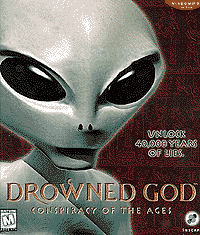
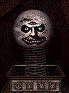

Drowned God
by Inscape
 | (out of 5) |
Price: $49.95
Type of game: graphic adventure
Platforms: Windows 95, Windows 3.1, Macintosh

The release of Myst (Broderbund) paved way for a new style of PC game. Focusing on detailed art and cunning puzzles, the new graphic adventure game has become a market standard.
Inscape's contribution, Drowned God, has a decidedly dark and disquieting quality. The reality in the game is a shadowy version of our own, filled with figures from our own history. Leonardo DaVinci, Carl Jung, Aleister Crowley, and the Man in the Iron Mask as well as historic events from Genesis to the JFK assassination are all woven into the story--fitting remarkably well, due to some good research.
I would recommend downloading and installing the latest patchsee below for the game (I had a number of problems which have all been addressed in the latest patch). Once the patch has been installed--fixing the numerous problems with ActiveX/video card conflicts--the player is ready to be immersed in a world of conspiracy and deceit. Some tips I would give players include: 1) Enter your full name when asked. 2) Listen closely--some of what is said to you is difficult to hear and there are no subtitles. 3) Write stuff down!
 If you choose not to consult the instruction book for a few hints to get you started, you are faced with a complete mystery. Unlike some games which require the player to wade through pages--or screens--of background information (e.g. Obsidian by SegaSoft, which I uninstalled after the first trial), Drowned God makes information part of the reward for solving its puzzles.
{kind=link}
At one point in the game you will be prompted to go online. Yes, you really do dial up (T1 or dedicated line users will experience much more seamless gameplay). The game connects to Inscape's site, where current information is downloaded and incorporated into the game. The intent of this is to add more realism--world events taking place long after the game was released are suddenly part of the story--but I personally found the procedure of dial-up distracting, like when the projector goes out of focus at the theater. You can choose to skip the Internet connection if you wish, but it is definitely an interesting and unique use of the Net in game play.
Other features of this game which won me over--and kept me from giving up when the game bugged out--were the excellent artwork, the subtly unnerving score (featuring Miasma) and the creative, enthralling storyline. On the downside, the interface is extremely simple, the cursor changes when passed over a "hot" area--making some parts of the game a "hot area hunt"--and the single backgrounds switch suddenly with no fade or blend. ActiveX is used to add animated sequences to the game. Rendering and illustration is blended together seamlessly (the illustrations are superb) to create an unsettling atmosphere throughout the game. Play in a darkened room late at night and count the number of times you look over your shoulder.
{kind=link}
Warnings and tech stuff:
- Drowned God carries an 'M' (17+) rating for strong language. I don't remember any strong language myself, but I would not recommend the game to younger players on the grounds that the experience is intense and the subject matter is complicated. Besides, how many 14-year-olds would appreciate a reference to Aleister Crowley?
- I found the Windows 95 version of this game to be extremely fragile. I was assured that all the problems I encountered in the game have been addressed by the latest patch:
|
Download readme for patch [1k] DOWNLOAD Download patch as .exe [939k] DOWNLOAD |